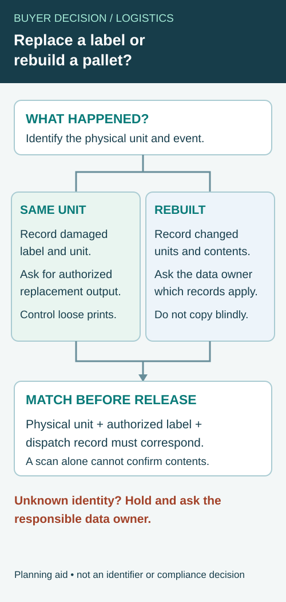

The warehouse asks for a pallet barcode, while the artwork file contains the case product code. Both are called shipping labels in email, so the printer receives a size and a number without a clear statement of what the number identifies.
Separate trade-item identity from logistic-unit identity before designing the label. Confirm the identifier, data owner, packing event and scanning use. The correct graphic layout cannot repair an identifier assigned to the wrong kind of object.

Name the object being identified
A trade item is a product or packaging level identified for relevant business transactions. A logistic unit is assembled for transport or storage and needs its own traceable identity. A case can play a role in either discussion depending on the actual operation; its shape alone does not settle the data requirement.
The GS1 Logistic Label Guideline distinguishes labels identifying trade items from GS1 logistic labels, for which the SSCC identifies the logistic unit. Use the applicable current GS1 specifications and partner requirements when implementing the actual data structure.
This article is a purchasing handoff guide. It does not allocate a GS1 identifier, generate production barcode data or determine a retailer's particular receiving requirement.
Ask who creates and controls the identifier
Identify the party assigning the logistic-unit identifier and the system that produces its data. Ask how duplicate assignment is prevented, how reprints are controlled and how the physical unit links to the dispatch record. Do not ask the artwork designer to invent a plausible-looking number.
For a case trade-item code, obtain the approved product identity and relevant packaging level from the brand or data owner. A consumer-unit code should not be copied onto the case merely because the design already contains it.
The multipack barcode guide addresses unit-versus-pack identification. Pallet labeling adds the transport-unit relationship and the records that explain what the pallet contains.
Build an identifier handoff sheet
| Question | Answer required before printing |
|---|---|
| Object | Consumer unit, case trade item or logistic unit |
| Identifier | Approved key/data type and authoritative owner |
| Data source | System or controlled file generating production content |
| Packing event | When the physical contents and identity become known |
| Partner requirement | Applicable specification, version and receiving use |
| Label output | Printer, media, dimensions and physical placement |
| Reprint control | Authorization and prevention of unintended duplicate use |
| Verification | Data checks and relevant printed-symbol checks |
| Record link | Connection to contents, dispatch and receipt evidence |
The sheet separates responsibilities. It does not replace the technical specification for data syntax, symbol size, placement or verification.
Keep static design separate from event data
Branding and fixed headings may be prepared in advance. Logistic-unit identity and contents may depend on the actual packing event. Ask which fields are static and which are generated when the unit is assembled.
A preprinted shell can support variable output where the selected equipment and media are appropriate. The date-and-lot field guide explains the data handoff for variable printing. The same principle applies here: the template should receive authorized data rather than become the data authority.
If the logistics label is printed at another site, confirm how it receives the correct record and how the operator selects the right job. A correct label applied to the wrong pallet remains an identification failure.
Check the physical and digital links together
Verify that the decoded data has the intended meaning and matches the human-readable information where required. Then assess the printed symbol under the relevant method and receiving conditions. A casual scan can assist an operational check without replacing formal verification where it is required.
The barcode verification guide separates decoding from quality assessment. Keep both results linked to the sample and output configuration actually evaluated.
Also check label placement against the applicable specification and handling route. Do not prescribe a universal position from a generic pallet photograph. Stretch wrap, handling and partner rules can affect the actual instruction that the logistics owner must approve.
Separate a replacement print from a rebuilt logistic unit
A pallet label may need another print because the first label is damaged, or the physical pallet may have been split and rebuilt. The two events require different questions. A replacement print for the same identified unit is an output-control issue; rebuilding may change the physical unit and the record that identifies its contents. The data owner must decide the applicable identifier and record treatment under the actual trading-partner rules.


Before printing, keep the affected unit, the prior label and the system event linked. The GS1 US SSCC overview describes the SSCC as an identifier used on a logistics label. It does not authorize reusing any specific identifier or decide how this site's customer should handle a reconstructed shipment. The customer's system and applicable standards govern that decision.
| Question | Same physical unit; label unreadable | Contents split or rebuilt |
|---|---|---|
| What happened? | Record damage and the prior label/record reference. | Record which physical units and contents changed. |
| Identity to print | Ask the authorized data owner to confirm the replacement output for the same unit. | Ask the data owner which identity and record events apply to each resulting unit. |
| Prior label | Preserve its identity and prevent unintended use of any loose duplicate. | Identify and control labels that no longer describe the physical unit. |
| Contents record | Confirm the recorded contents still match the unit. | Link actual resulting contents to the appropriate updated records. |
| Release check | Match the replacement output to that unit and its dispatch record. | Match each physical unit, authorized output and updated dispatch record. |
| Open exception | Unknown source record or mismatched label stays unresolved. | Unknown contents or unit relationships stay unresolved. |
This is a coordination record, not a rule that every reprint keeps an identifier or that every rebuild gets a particular identifier. Keep the actual implementation and any required transmission to the receiving partner with the authorized logistics/data owner.
Control the loose label before the next pallet moves
For an illustrative warehouse event, an operator finds a torn logistics label on a pallet that has not been opened. Record its identity and ask the responsible system owner to issue the authorized replacement. Check the replacement against the same physical unit and dispatch record before release. If the original print is still usable, prevent both prints from being applied to different units by mistake; follow the operation's approved label-control process.
In a separate illustrative event, the warehouse divides a mixed pallet into two physical units. A printout copied from the first pallet cannot by itself establish either new unit's contents or identity. Record the split and obtain the data owner's instruction for the resulting units. Do not simply place an identical spare label on the second unit to make the paperwork look complete.
Keep physical output and electronic information aligned
Ask who confirms that the label data corresponds to the unit and that its contents and dispatch information are updated where required. A correctly printed symbol on the wrong pallet is still the wrong handoff. A successful scan can help check decoded information; it does not replace a specified verification method or confirmation that the system record represents the physical contents. The barcode verification guide covers that separate evidence question.
If the original record, pallet contents or trading-partner instruction cannot be identified, hold the affected scope for resolution rather than invent a number. For a label-output inquiry, supply the object type, authorized data source, output equipment, partner requirements and the specific replacement or rebuild scenario. This guide does not generate GS1 identifiers, determine legal compliance or claim a customer shipment was tested.
Handle rework without losing identity
When a unit is split, rebuilt or relabeled, ask the data owner which identifier and records remain valid under the applicable rules. Do not silently reuse an identifier because the pallet base looks the same.
For a simple print failure, the authorized reprint procedure should distinguish replacing an unreadable label on the same unit from creating another unit. Preserve the record of what happened and prevent loose duplicate labels from being used elsewhere.
A hypothetical cider shipment might contain several case products on one pallet. The physical assortment and electronic record need to agree; a generic product code cannot describe the entire event merely because all the bottles share a brand.
Keep illustrative symbols out of production data
A packaging photograph can show where a case or pallet label might sit, but its graphic bars are not a source of authorized identifiers. Supply production content through the controlled data route. Mark any demonstration file as nonproduction and confirm that the printer replaces all illustrative content before the applicable output approval.
Buy the supported output arrangement
Ask the printer or equipment provider to confirm the media, format and variable-output scope it can support. Keep the actual partner specification with the purchase request. Do not describe a blank logistics-label template as a completed GS1 implementation.
Send a logistics-label production brief with the object being identified, authoritative data source, partner specification, output equipment and handling conditions. Use illustrative data only in clearly marked test files. The form opens an email draft; review it and attach the relevant controlled requirements through email or the listed WhatsApp route.